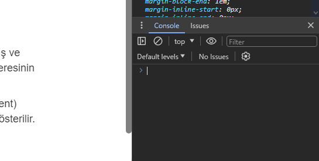

JavaScript bir web geliştiricinin öğrenmesi gereken 3 dilin sonuncusu. Daha önce HTML ve CSS'i gördük. JavaScript web sayfanıza kullanıcı ile etkileşim ekleyen programlama dilidir. Bu etkileşim bir butona tıklanması, bir forma değer girilmesi veya bir animasyon olabilir. Bir HTML dökümana JavaScript uygulandığında o döküman artık dinamik bir web sayfası olur.
JavaScript tarayıcılarda çalışmak üzere tasarlanmış bir programlama dilidir. Script olarak yani yazı şeklinde program olarak girilir. Tarayıcınız bu script'i (betik de derler) okur ve çalıştırır. JavaScript'i diğer bir programlama dili olan Java ile karıştırmayın, birbirleri ile en ufak alakaları yoktur.
Bir diğer JavaScript temel özelliği ise büyük-küçük harf duyarlı olması. Yani
isim ve İsim değişkenleri kullanılırsa ikisi birbirinden
farklı değerleri ifade eder. Bu yüzden kod yazarken büyük-küçük harflere dikkat ediniz.
Daha önce hatırlarsanız Geliştirici Araçları (Developer Tools) penceresini açmış ve sayfadaki HTML elemanların kutu modelini incelemiştik. Geliştirici Araçları penceresinin önemli yardımlarından biri de bize bir JavaScript konsolu sunması.
Sayfada herhangi bir elemana sağ tıklayıp "Öğeyi Denetle" (ya da Inspect Element) seçtiğinizde Geliştirici Araçları penceresi açılır ve o eleman HTML kodu içinde gösterilir. Pencereyi incelediğimizde bir de Console sekmesi olduğunu görürüz.
Yazacağınız programda bir hata olduğunda buna programcılıkta bug (böcek) denir. Bu hatayı tesbit edip giderme işine ise debugging denir. Geliştirici Araçları penceresi hatalarınızı bulmakta çok işinize yarayacaktır. Konsol ise size JavaScript kod testleri yapabileceğiniz bir alan verir. Ayrıca konsolda sayfanıza eklediğiniz JavaScript kodun ürettiği hata mesajları da tarayıcı tarafından yazılacaktır.
Hemen tüm tarayıcılarda Geliştirici Araçları vardır. Ama farklı erişim şekilleri olabilir, bunu tarayıcınızın yardım dökümanlarına bakınız. Konsolda direk kod denemesi de yapılabilir.
gibi.
Syntax bir programlama dilinin sözlüğü ve dilbilgisi gibidir. Nasıl bir
konuşma dilinde anlamlı cümleler kurmak için belli kelimeleri belli kurallara göre
bir araya getirdiğiniz gibi, programlama dillerinde de anlaşılabilir bir program
parçası oluşması için o dilin syntax'ına (deyim yapısına) uygun davranmanız
gerekir. JavaScript program deyim yapısına bir örnek:
var kelimesi değişken (variable) tanımlarken kullanılan başlangıç kelimesi.
Daha sonra değişken için vereceğimiz isimi yazıyoruz. İsimin arkasından gelen =
işareti atama (assignment) işareti olarak bilinir, kendisinden sonra deyim satırı
sonuna kadar gelen işlemlerin sonucunu kendisinden önce belirtilen değişkene kaydeder.
var ilkSayı = 5; demek 5 sayısını ilkSayı isimli değişkene
kaydet demektir.
Noktalı virgül işareti deyim satırının sonuna gelindiğini belirtir. Her deyim satırının sonunda noktalı virgül olur. Alt satıra geçmek o andaki deyim satırını bitirmez, ama aynı satırda birden fazla deyim satırı noktalı virgül ile sonlandırılarak yazılabilir istenirse.
var ilkSayı = 5; deyim satırında bir konu daha var, atlamayalım.
var kelimesi ilkSayı değişkeni ilk defa o satırda kullanıldığı
için orada. Daha sonra burada tanımlanan ilkSayı değişkenini kullanırken
tekrar var yazılmaz, değişkenin ilk tanımlandığı yerde olur.
3'üncü satırda = işaretinden sonra noktalı virgüle varana kadar 2 adet
değişkenin toplanması işlemi var. Önce toplama işlemi yapılır (yani 5 ve 9 toplanır),
sonra toplam değişkenine 14 sonucu kaydedilir.
Bu örnek satırlar her biri JavaScript deyim yapısı kurallarına göre yazılmış satırlar oldukları için geçerli bir program parçası oluşturuyorlar. Statement
.
.